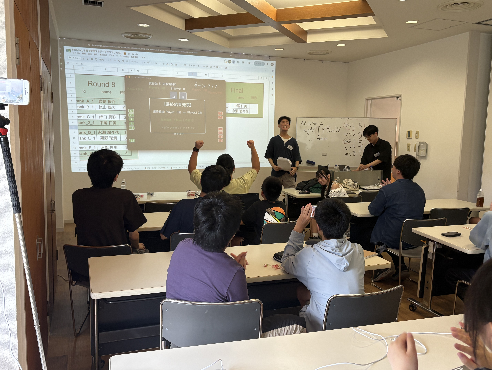
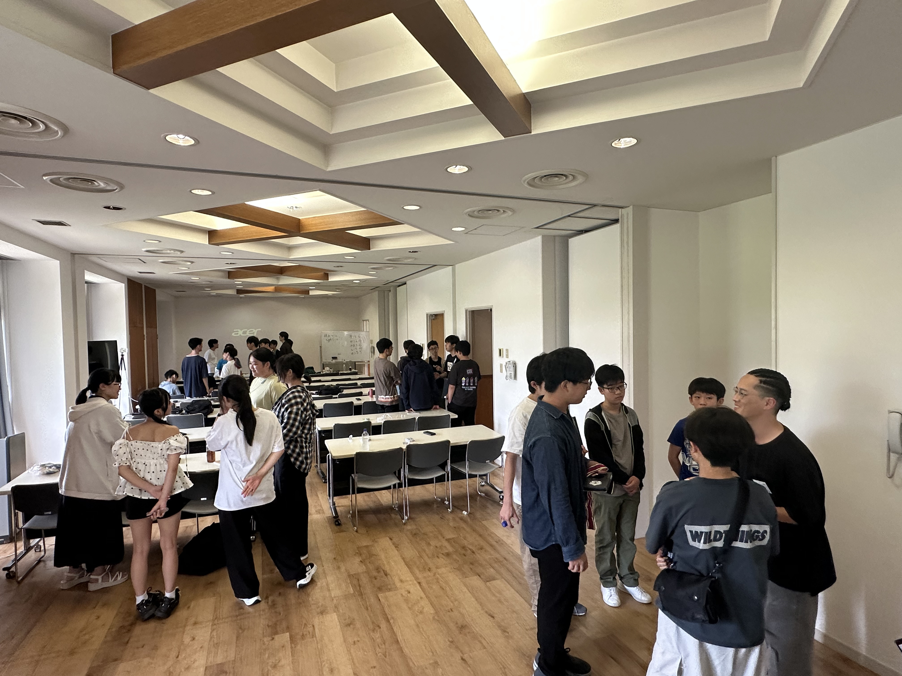

最終日、開始！
最も長かった2日目が終わり、これまでの学びの集大成を発揮する最終日が始まりました。
前日は夜遅くまで取り組む子もいれば、部屋に戻ってから班のメンバーと相談しながらブラッシュアップする子も。 最終日に向けて、それぞれが自分なりの準備を進めていた姿が印象的でした。
朝は、部屋を整え、荷物をまとめ、教室へ移動。 そこからレストランへ向かう準備を整え、朝食へと進みました。
合宿のラスト朝食
合宿最後の朝食。 疲れが見える子も多く、口数は少なめ。もくもくと食事に集中し、それぞれ自分なりにリラックスする様子が印象的でした。
会場は少し混み合っていましたが、周りへの気配りを忘れず、スタッフと協力しながら班行動ができていました。
食事のあとは教室へ戻り、朝活の準備に入りました。


朝活タイム♪ ラジオ体操とボードゲーム「ito」
2日目とは異なり、朝食のあとに朝活の時間を設けました。 まずはラジオ体操で体を動かし、少しずつ授業モードへ切り替えていく準備を進めました。
ラジオ体操のあとは、牧先生進行の朝活。 テーマは、チームで協力するボードゲーム「ito（イト）」です。 合宿のテーマでもあるトランプを使ってのゲームとなりました。
攻略のカギはコミュニケーション。 「合宿を一緒に過ごした仲間なら余裕だろう」といった前振りに教室が和み、先生たちも巻き込まれながら一緒に楽しみました。
ゲームでは、互いの考えや数値の予測を話し合いながらカードを並べ、ドキドキしながら進行。 「引きが悪かった〜」と悔しがる班もあれば、「よっしゃ！」と喜ぶ班もあり、表情豊かな時間になりました。
合宿で大切にしてきたコミュニケーションを、積極的な会話のなかで発揮する様子が見られ、良い形で朝活を終えることができました。


最終調整の時間
最後の調整として、約1時間半はブラッシュアップに集中する時間としました。 「どうすれば勝てるプログラムを作れるか」——静かに試行錯誤する子もいれば、近くの友達と相談しながら進める子もいました。
お互いに作ったプログラムを戦わせ、さらに良くすることに挑戦する姿も。 勝負の前から緊張や不安を抱え、「本当に勝てるかな？」と相談する子もいました。
プログラミングを「学ぶ」だけでなく、「より良いものを作り上げる」という思考にまで至ったこと。 その成長は、とても大きな一歩だと感じています。
良いものを作るために考え続け、実験し、結果を確認し、さらに改善を重ねる。 限られた時間のなかでも、一人ひとりが真剣に取り組む様子を見守りながら、スタッフ一同も「誰が優勝するのか」とワクワクしていました。


BeEnCup開催！
いよいよBeEnCupの開始です。 まずは各リーグに分かれ、リーグ1位を目指して対戦。 一緒に過ごしてきた班のメンバー同士がぶつからないよう調整し、完全なランダムで振り分けられた組み合わせで戦うことになりました。
リーグ戦では、各スタッフが実際にトランプが動く様子を見せながら、「どちらの戦力が良いか」と盛り上げて進行しました。 自信と不安が入り混じるなか、結果に一喜一憂する子もいれば、負けを受け止めて静かに次を考える子も。 なかでも印象的だったのは、本気で悔しがる姿です。 「何が悪かったのかな？」と確認し合う子もいれば、感情があふれて涙する子もいました。 合宿を本気で過ごしてきたからこその反応だと感じ、さらなる成長へのエネルギーにもつながっていく場面でした。
続いて決勝トーナメントへ。 リーグ2位のなかから選ばれた上位者も復活し、挑戦しました。 このトーナメントでは全試合を公開し、市川先生の操作のもと、内田先生の実況で進行しました。
みんなで見守るなか勝負が進み、教室にはさまざまな声が飛び交いました。 圧勝というよりは、どちらに転ぶかわからない接戦が多く、大いに盛り上がりました。
そして優勝したのは、敗者復活から勝ち上がったメンバー。 逆転の復活劇のなかで頂点に立ち、金メダルを手にしました。おめでとうございます！
今回のBeEnCupの結果は、次のとおりです。
- 優勝：京大本校
- 準優勝：横浜校
- 3位（2名）：梅田校
ちなみに、3位のうち1名はAコースの中学1年生。 学び始めてまだ1年未満の生徒でもあり、その活躍は本当にすばらしいものでした。



表彰式・閉講式
BeEnCupの上位者には、金・銀・銅のメダルが贈呈されました。 授与のあと、合宿参加メンバーから大きな祝福が送られました。
金メダルを獲得した優勝者からは、どのように工夫して開発したかが共有されました。 何が大切なのか、どう取り組むと良いか——シンプルで実践的なポイントを、みんなに教えてくれました。
授与式のあとは閉講式へ。 今回の学びを自分のものにするための時間です。 空気を引き締め、緊張感と集中力を高めながら、各自で合宿をじっくり振り返ってもらいました。
合宿で感じたことは人それぞれ。 新しい仲間との出会い、新しいスキル、非日常の体験——それぞれが自分なりの良い経験と学びを確認し、成長につながる時間となりました。

2泊3日の合宿、お疲れさまでした
2泊3日の合宿が終了しました。 それぞれが思い思いに参加し、一人ひとりが何か得られた時間になったのではないでしょうか。
解散時はにぎやかな空気のなか、ギリギリまで新しい仲間と話を続ける姿も見られました。 帰宅に向けたご案内のあと、笑顔で解散していく様子には、たくましさも感じました。
日常に戻り、普段どおりの時間が流れていくなかでも、ときどき合宿での日々を思い出してもらえたら嬉しいです。 これからもさまざまなことを学び続け、プログラミングも楽しんでいってほしいと思います。
3日間の合宿、お疲れさまでした！